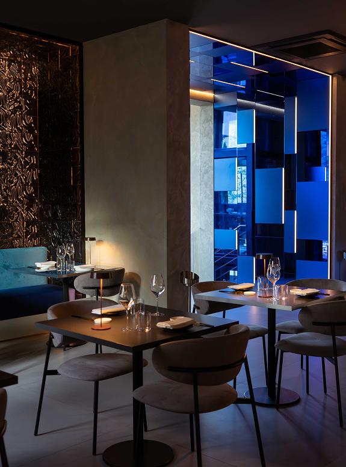

Per un'esperienza dal sapore autentico, portiamo a Bologna la tradizione della Robatayaki, un antico metodo di cottura giapponese a fuoco vivo. Il calore intenso del carbone abbrustolisce e sigilla i sapori, creando un equilibrio perfetto tra croccantezza esterna e succulenza interna.
Non solo fuoco: i nostri maestri del Sushi Bar lavorano con tecnica e rispetto una materia prima d'eccellenza, offrendo crudi dal gusto puro ed essenziale. Un incontro perfetto tra l'intensità della fiamma e la delicatezza delle nostre selezioni, in un'atmosfera dal design contemporaneo e luci soffuse.

Il nostro ristorante è un'oasi urbana dove la raffinatezza giapponese si fonde con un design contemporaneo. Gli interni sono caratterizzati da linee essenziali, materiali naturali e dettagli minimalisti che evocano un'atmosfera rilassante e accogliente.
Durante la bella stagione, il nostro giardino interno offre uno spazio esclusivo dove gustare i nostri piatti immersi nel verde per un'esperienza intima e suggestiva al riparo dalla frenesia cittadina.
Scopri di più